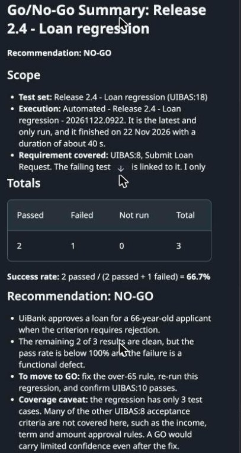
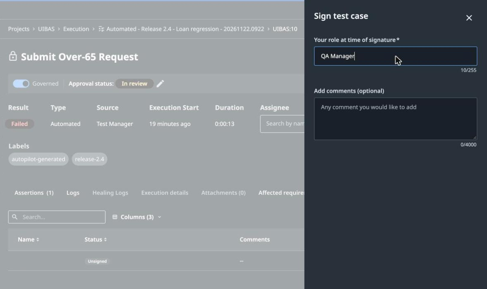

9. Decide Go or No-Go¶
Why it matters for you: the tools give you evidence, but the call is yours. This step turns today's evidence into a decision a release manager can act on – and defend afterwards.
It's release night, and the release manager wants to know: can we ship the new loan form?
Check these first
✅ Your Release 2.4 - Loan regression run from 7. Build and Run the Regression Set finished with 2 passed / 1 failed / 0 none, and chat triaged the failure as a UiBank defect.
✅ The execution PDF from 8. Read the Results is saved on your computer.
Pick your path¶
Both paths reach the same decision:
- Path A – Delegate. Delegate repeats the over-65 application in the browser, takes screenshots, and writes a PDF report on your Desktop. Pick it if Delegate is connected on your laptop.
- Path B – Browser only. Autopilot chat writes the go/no-go summary, and you attach the execution PDF from step 8. Pick it if you don't have Delegate, or if Path A gets stuck.
Got time? Do both, and compare the two reports.
Path A – Delegate reproduces the defect¶
This path uses Delegate, the desktop agent: it works in your browser with your mouse and keyboard. A go/no-go call needs evidence, so Delegate repeats the over-65 application on UiBank, captures the result and puts it in the report.
It's your turn now!
- Copy the totals and the triage Autopilot chat gave you in step 7.
-
Go back to your Delegate session. Replace
<PROJECT_PREFIX>with your project prefix from step 1. Paste the prompt below and, in the same message, paste the totals and triage under it:Reproduce the UiBank defect in the browser: open https://uibank.uipath.com, apply for a loan with the data from the Submit Over-65 Request test case in my Test Manager project <PROJECT_PREFIX>, and take a screenshot of the result. Then look up its loan ID on the Loan Lookup page, and take a screenshot. Then create a release manager report in PDF for the latest execution of Release 2.4 - Loan regression, and save it on my Desktop. Cover this execution only, not earlier ones. I need a go/no-go recommendation before tonight's sign-off meeting. Base it on UiBank defects only, and list test defects as follow-ups. Include the triage, and add both screenshots and the loan ID as evidence. Under each screenshot, add one line on what it proves against the requirement.It takes about 6 minutes.
-
Approve when Delegate asks. Don't use your browser while it reproduces the defect.
- If Delegate asks where to save the report, choose your Desktop. Keep the default file name, and select Submit.
On a Mac, this uses Delegate for macOS (Preview). If it doesn't work, switch to Path B.
Delegate gives the path to the saved report and summarizes it in the chat. Always review its output before sharing. The report shows:
✅ Scope – the execution it covers
✅ Totals – passed, failed and none (the same numbers as the Execution page)
✅ Success rate – passed out of passed + failed
✅ Triage – each failure, whether it's a UiBank or a test defect, and the criterion it breaks
✅ Evidence – the approval and Loan Lookup screenshots, each with what it proves, and the loan ID
✅ Recommendation – GO or NO-GO, and why
Delegate may also list gaps in the requirement or other observations as follow-ups. Check its reasoning against the requirement before you pass them on. UiBank's Loan Lookup page always shows the email someone@sample.com. That's how the demo app works, not a defect to report.
Saved as .md instead of PDF?
Ask Delegate:
Create a PDF of the report and save it on my Desktop.
Path B – Autopilot chat writes the summary¶
This path needs only your browser. Open your project, click Autopilot (the sparkle icon, top right) and keep the mode on Edit.
It's your turn now!
-
Send:
Write a go/no-go summary of the latest execution of Release 2.4 - Loan regression for a release manager: scope, totals, success rate as passed out of passed plus failed, each failure with the acceptance criterion it breaks, and a GO or NO-GO recommendation based on UiBank defects only. -
Chat only reads your project for this: it uses Test Manager tools such as Get_test_executions and Get_test_case_logs_by_test_execution. These are the same MCP tools you met in step 7 – this time read-only. In Edit mode you select Accept for each one – about 4–6 times. It takes about 1–2 minutes.

What you should get
✅ NO-GO, because one UiBank acceptance criterion fails: a real application defect, not a flaky test or an environment problem.
✅ Totals 2 passed / 1 failed / 0 none, and a success rate of 66.7% (2 out of 2 + 1).
✅ The over-65 criterion quoted from the requirement: applicants over 65 must be rejected.
✅ A release condition: fix the over-65 rule, then re-run the set and get 3 out of 3.
✅ Chat may add a Coverage caveat: only 3 test cases cover the requirement. Keep it in your decision as a note.
Chat recommends GO? Ask it to check Submit Over-65 Request against the over-65 criterion again. Chat can be wrong: the decision is yours.
Then write the one-page decision below, and attach the execution PDF from step 8 as the evidence.
Write the one-page decision¶
A release manager wants one page. Copy the template into an email or a document and fill it in from your report (Path A) or the chat summary (Path B).
GO / NO-GO DECISION – UiBank loan form, release 2.4
Decision: [GO or NO-GO]
Date and author: [today's date, your role]
Scope: [test set and execution name, what it covers]
Totals: [passed / failed / none]
Success rate: [passed out of passed + failed, as a %]
Blocking defect: [what UiBank does wrong, in one sentence]
Criterion broken: [the acceptance criterion, quoted from the requirement]
Evidence: [execution PDF file name; screenshots or Delegate report, if any]
Test defects: [failures caused by the test itself, as follow-ups – or "none"]
Notes: [caveats, for example limited coverage – or "none"]
Conditions to reach GO:
1. [what must be fixed]
2. [what must be re-run, and the result you need]
What a filled-in one looks like
GO / NO-GO DECISION – UiBank loan form, release 2.4
Decision: NO-GO
Date and author: workshop day, QA manager
Scope: Release 2.4 - Loan regression, latest automated execution
(standard, underage and over-65 loan applications)
Totals: 2 passed / 1 failed / 0 none
Success rate: 66.7% (2 out of 3)
Blocking defect: UiBank approves a loan for an applicant aged 66
("Congrats! You've been approved...").
Criterion broken: Applicants over 65 must be rejected
("Not approved due to age.").
Evidence: execution PDF from step 8; the same failure in the manual,
Delegate and autonomous runs of step 4
Test defects: none
Notes: only 3 test cases in the regression set cover the requirement
Conditions to reach GO:
1. UiBank rejects applicants over 65.
2. Release 2.4 - Loan regression re-run: 3 out of 3 passed.
Check the decision¶
Check it
The right call is NO-GO, because UiBank breaks the over-65 rule – not because of the 66.7% success rate.
A success rate of 95% with the same failure would still be NO-GO. A success rate of 66.7% caused only by test defects could be a GO. The rate tells you how much failed; the requirement tells you whether it matters.
Think about it
How did you tell a UiBank defect from a test defect? Would the success rate alone have told you to stop the release? What does a developer need to fix it? How long would all of this take you by hand?
Optional extras¶
Pick what fits your role. None of these is needed to finish the workshop.
Optional: Draft the defect (UAT)
In Delegate, in the same session as Path A:
Draft a defect for the UiBank age defect: title, steps to reproduce, test data, expected and actual result, loan ID, and the screenshots. Save it on my Desktop.
No Delegate? Ask Autopilot chat for the same draft, without the screenshots and the loan ID, and copy the text from its answer.
In a real project, log the defect before the go/no-go call: in your defect tracker, or from the failed result in Test Manager if it's linked to your ALM (Application Lifecycle Management) tool. See Analyzing results.
Optional: Schedule the report as a morning routine (Delegate)
A routine suits a personal report. For the regression run itself, schedule the test set in Test Manager – on the set, Execute → Create Schedule – so it runs on a robot every morning (Scheduling test executions). Let the routine only fetch and summarize the results. Routines are a Delegate feature.
Save it as a routine. Ask Delegate, for example: "Save the report part of this task as a routine called UiBank Release Report. Include my Test Manager project in the routine, so it works when it runs on a schedule." The routine appears under Routines in Delegate's left panel.
Put it on a schedule. Under Scheduled routines, a Day / Week / Month calendar shows every routine with a time slot. New routines wait in the Not scheduled list below it. Drop one onto a time slot or set it to recur, for example weekdays at 8:00 AM.
Start from a ready-made routine. The Test Cloud plugin includes Summarize last night's execution of a test set, already waiting in the Not scheduled list. It returns results only after the test set has run overnight, so on workshop day it finds nothing. To try the same summary now, ask: "Summarize the latest execution of Release 2.4 - Loan regression in my project."
A scheduled routine runs only if its machine is powered on and signed in at the scheduled time.
Optional: Formal sign-off with governance (QA, Test Cloud only)
Some teams need a signed record of who accepted a test result, and in which role. Test Manager's governance feature adds approvers and signatures to test cases and test results, and the signature appears in the execution PDF. Your company may not need it – skip this box if so.
You own your project, so you can switch governance on yourself:
- Project Settings → Governance → Enable governance.
- Set Default governance state to Governed, and add yourself under Default approvers: type your first name or the start of your email address. Your full name may find nothing, because the directory can list you differently. Leave Signing order off. Select Save. You see "Governance settings updated successfully."
If you can't add yourself as an approver, or the sign icon doesn't appear on your row, ask your trainer to show the signed result in the Trainer Demo project instead.
Didn't switch governance on before your regression run in step 7? Then its results aren't governed yet – govern the over-65 result now. Switched it on in step 7? The result is already governed: open it (item 1), then skip to item 3.
Before you sign: your name and email appear in the signature
The signature and the PDF show your name and email address, and the signed result stays on the shared workshop tenant. Don't share the signed PDF outside the class, and crop screenshots before you use them. The test case's Latest Results grid shows your email under Executed By too: crop it as well.
- Execution → open your regression execution → open the Submit Over-65 Request result.
- Turn on the Governed toggle. Approval status shows In work.
- Select the pencil next to the status. In Set approval status, select In review. From now on the result is locked: nobody can edit it until it's signed.
- Open the Governance tab of the result. On your approver row, select the sign icon. In the Sign test case panel, fill in Your role at time of signature, for example
QA Manager, add a comment if you like, and select Sign. - The status changes to Signed, and your approver row shows Signed with your name. Download the execution PDF again: it now has a Governance section with the signature.
In a real project, switch governance on before the run: new results are then governed from the start. Moving a result to In review locks it, so make any override or comment first. See Testing process governance and Governance for test results.

Discuss: when is an override OK?
Test Manager lets you override a result – for example, change a Failed result to Passed – with a mandatory comment. The override is visible on the result, so it works as a documented waiver (Overriding test results).
Discuss with your neighbour, without changing your results:
- Would you override the over-65 failure to reach GO? (No: UiBank is wrong, and the override would hide a real defect.)
- When would an override be fair? For example, a failure caused by the test itself, when the app did the right thing and re-running doesn't help.
- Who in your company should be allowed to override, and who should sign it off?
Go further¶
Stay in the same Delegate or Autopilot chat session – it remembers the run and the report:
✅ "Summarize the failures in three bullet points I can paste into Teams or Slack."
✅ "Add a section to the report with recommended next steps for the developers."
✅ "Rewrite the summary for a developer, with the failed check and the actual value UiBank returned."
More ideas in More Prompts to Try.
Nice work!¶
You turned today's runs into a documented NO-GO: a UiBank defect against a named acceptance criterion, with evidence, and a clear condition for GO.